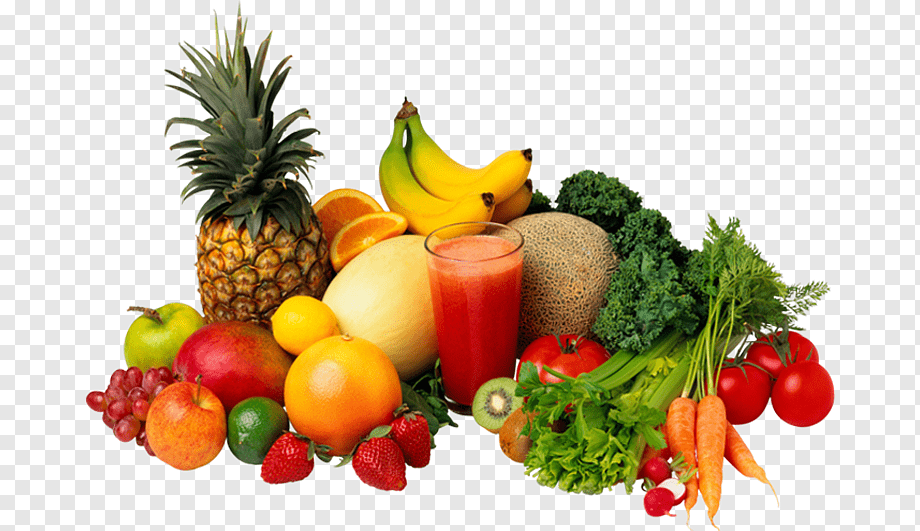

Receita saudável

Receita saudável para o dia a dia
Ingredientes
- 1 Banana
- 2 Colheres de aveia
- 1 Colher canela
- 2 Ovos
Modo de preparo
- Amasse a banana, depois coloque em um recipiente fundo,
bata com o garfo os 2 ovos junto com a banana,
depois acrescente a aveia e o cacau.
- Bata tudo com o garfo e depois coloque na frigideira untada e antiaderente,
tampe a frigideira e vire após dourar.
- Minha dica é fazer panquecas pequenas, fica mais fácil de virar.
- E quando tiver pronta, você pode polvilhar coco ralado sobre as panquecas.
Informaçoes Adicionais
Voce poderá servir essas panquecas no café da manha com geleia
Feito com amor por Rafaela